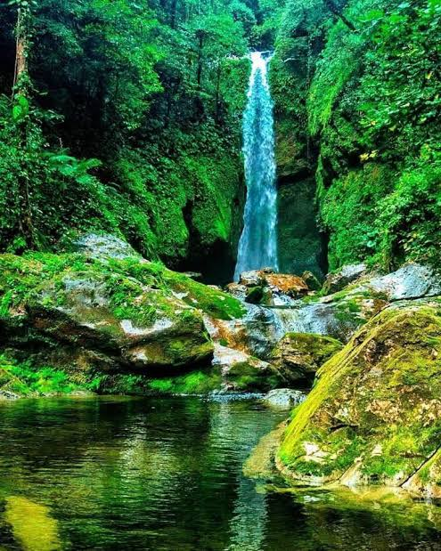
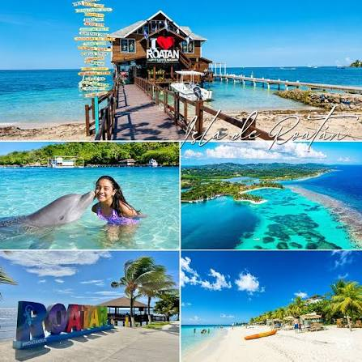

Ruta 1
Ruta Maya y Arqueología
Destino principal: Parque Arqueológico de Copán, departamento de Copán.
Este sitio conserva plazas, templos, escalinatas y esculturas que permiten conocer parte de la historia de la civilización maya.
Atractivos: parque arqueológico, museo de escultura y centro histórico de Copán Ruinas.
Dificultad de acceso: baja a moderada; hay senderos y superficies irregulares.

Ruta 2
Ruta Lenca y Pueblos con Encanto
Destinos sugeridos: La Esperanza e Intibucá.
Una ruta para apreciar tradiciones, artesanías, gastronomía local y paisajes de montaña, respetando la identidad de las comunidades.
Atractivos: mercados, artesanía, clima fresco y experiencias culturales comunitarias.
Dificultad de acceso: baja a moderada, según el recorrido y las condiciones de la carretera.

Ruta 3
Ecoturismo y Bosques Nublados
Destinos sugeridos: Parque Nacional Celaque y Parque Nacional Pico Bonito.
Ideal para observar la naturaleza, caminar por senderos y aprender sobre la importancia de los bosques y las fuentes de agua.
Atractivos: biodiversidad, miradores, senderismo y observación de aves.
Dificultad de acceso: moderada a alta en senderos de montaña; se recomienda guía local.

Ruta 4
Caribe y Arrecifes
Destinos sugeridos: Roatán, Utila y Guanaja, en Islas de la Bahía.
Una experiencia de playa y cultura isleña, con opciones para conocer arrecifes mediante operadores responsables.
Atractivos: playas, buceo con operadores certificados y gastronomía caribeña.
Dificultad de acceso: baja en zonas urbanas; las actividades acuáticas requieren medidas de seguridad.
Distancias y tiempos estimados
Los datos son orientativos y pueden variar según la ruta, el tráfico, el clima y el medio de transporte. Confirma el recorrido antes de viajar.
| Destino |
Ciudad de referencia |
Distancia aproximada |
Altitud aproximada |
Tiempo estimado |
| Copán Ruinas | San Pedro Sula | 180–200 km | 600 m s. n. m. | 3.5–4.5 horas |
| La Esperanza | Tegucigalpa | 170–190 km | 1,700 m s. n. m. | 3.5–4.5 horas |
| Parque Nacional Celaque | San Pedro Sula | 200–230 km | Zona montañosa; varía por sendero | 4–5 horas hasta la zona de acceso |
| Roatán | La Ceiba | Trayecto marítimo aproximado de 70 km | Variable según el punto visitado | 1–2 horas en ferry, según servicio |
Nota: las distancias, altitudes y duraciones deben verificarse con fuentes turísticas y de transporte actualizadas antes de usar el portal como guía de viaje real.
Solicitar información de un tour